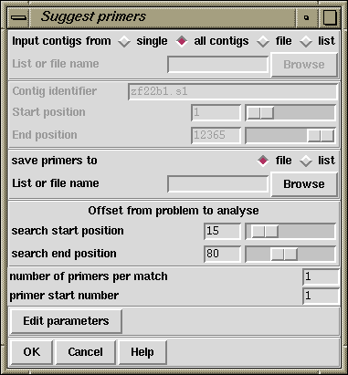

The purpose of this function (which is available from the gap4 Experiments menu) is to suggest custom primer experiments to extend and "double strand" contigs. First the routine finds regions of contigs with data on only one strand. Then it selects templates and primers, which if used in sequencing experiments, would produce data to cover these single stranded regions. This information is written to a file or a list and also appears in the Output window. For each primer suggested a tag is automatically created containing the template name and the sequence. See also section Suggest Long Readings, and section Double Stranding.
The following example shows how the results appear in the Output window.
Wed 04:53:08 PM: Suggest Primers ------------------------------------------------------------ Selecting oligos for contig xf23a3.s1 between 1 and 12379 At 3873 - template zf23b2, primer GAAACTGGATAATACGAC, number 1 At 5847 - template zf18g11, primer CCTCCAATAGCGTGAAG, number 2 At 7924 - template zf22d11, primer GTAAAGTGTAATTCAAGGAAG, number 3 At 9033 - template zf97c10, primer ATGATAGAAATCTCGTGG, number 4 At 9972 - template zf98b5, primer GCGGAAAGTTGAAAGAG, number 5 At 10506 - template zg09a9, primer ACACATCATTTCGGAGG, number 6 At 10958 - template zf24c1, primer CAGTTTACGAGAAAGTCC, number 7 At 11529 - template zg29a12, primer ACCTTCCCAAAAGTTCC, number 8 At 11897 - template zf97d7, primer AACCCGATTTTCGTAATG, number 9 Complementing contig 358 At 11400 - template zf38b1, primer CGAAGACCCAAAGAAAG, number 11 At 9902 - template zf98a4, primer CTTTTCTCTTTCAACTTTCC, number 12 At 7104 - template zf22h10, primer GTTGTCACGAAAATCGC, number 13 At 6564 - template zf21e6, primer CGGATCAAATATGGATGG, number 14 At 1499 - template zf98a11, primer CGTGATTTTTACACTATTTCC, number 15 At 774 - template zf19c4, primer TCCAATTTTGATTCAGGC, number 16 Complementing contig 46
The following shows the contents of the corresponding file. The fields are template name, reading name, primer name, primer sequence, position and direction.
zf23b2 zf23b2.s1 B0334.1 GAAACTGGATAATACGAC 3818 + zf18g11 zf18g11.s1 B0334.2 CCTCCAATAGCGTGAAG 5789 + zf22d11 zf22d11.s1 B0334.3 GTAAAGTGTAATTCAAGGAAG 7883 + zf97c10 zf97c10.s1 B0334.4 ATGATAGAAATCTCGTGG 8984 + zf98b5 zf98b5.s1 B0334.5 GCGGAAAGTTGAAAGAG 9932 + zg09a9 zg09a9.s1 B0334.6 ACACATCATTTCGGAGG 10460 + zf24c1 zf24c1.s1 B0334.7 CAGTTTACGAGAAAGTCC 10902 + zg29a12 zg29a12.r1 B0334.8 ACCTTCCCAAAAGTTCC 11487 + zf97d7 zf97d7.s1 B0334.9 AACCCGATTTTCGTAATG 11855 + zf23a3 zf23a3.s1 B0334.10 CAAAGCAATGTCCCCAG 12339 + zf38b1 zf38b1.s1 B0334.11 CGAAGACCCAAAGAAAG 930 - zf98a4 zf98a4.s1 B0334.12 CTTTTCTCTTTCAACTTTCC 2427 - zf22h10 zf22h10.s1 B0334.13 GTTGTCACGAAAATCGC 5220 - zf21e6 zf21e6.s1 B0334.14 CGGATCAAATATGGATGG 5771 - zf98a11 zf98a11.s1 B0334.15 CGTGATTTTTACACTATTTCC 10833 - zf19c4 zf19c4.s1 B0334.16 TCCAATTTTGATTCAGGC 11565 -

The contigs to process can be a particular "single" contig, "all contigs", or a subset of contigs whose names are stored in a "file" or a "list". If a file or list is selected the browse button will be activated and, if it is clicked, an appropriate browser will be invoked. If the user selects "single", then the dialogue for choosing the contig and the section to process becomes active.
The primer sequences, their template names and their reading names can be written to a file or a list and an appropriate browser can be used to aid its selection.
For each single stranded region located, the program will search for a primer on its 5' side in the region "search start position", to "search end position". That is, it will try to locate a primer starting at "search start position" and then will look increasingly further away until it reaches "search end position".
If required, by employing the "number of primers per match" entry box, the user can request that the program tries to suggest more than one primer per problem. The "primer start number" is an attempt to generate a unique name for each primer suggested. If the number was set to, say 11, and the database was named B0334, then the first primer would be named B0334.11, the next B0334.12, etc in the output file.
The "Edit parameters" button invokes a dialogue box which allows the specification of further parameters. Primer constraints can be specified by melting temperature, length and G+C content.